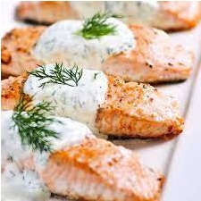

Ingrediënten:
- Zalm
- Citroen
- Knoflook
- Olijfolie
Bereiding:
- Verwarm de oven voor op de juiste temperatuur.
- Marineer de zalmfilets met olijfolie, geperste knoflook, citroensap, zout en peper.
- Leg de gemarineerde zalmfilets in een ovenschaal en bak ze in de voorverwarmde oven tot ze gaar zijn.
- Bereid ondertussen de citroen-knoflooksaus door citroensap te mengen met geperste knoflook en olijfolie.
- Serveer de gebakken zalm met de citroen-knoflooksaus.
